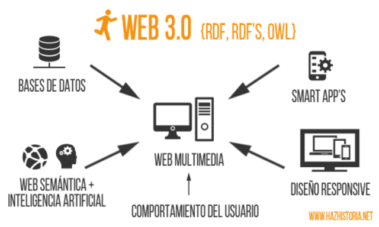

Línea del Tiempo Evolución de la Web
2010
Web 3.0

Conocida como la web semantica y “data web”, World Wide Web
Incorpora la conexión de aplicaciones web conectadas a otras
Inter-Operativa, el usuario puede controlar los cambios que desee
modificando directamente la base de datos
Multiplataforma y Portable, gestionada por la nube, Dinamicas y
Animadas, Omniciente o Ubicua
Dio origen a un uso intuitivo, de fácil acceso y de propocito,
"El BOOM de la web"